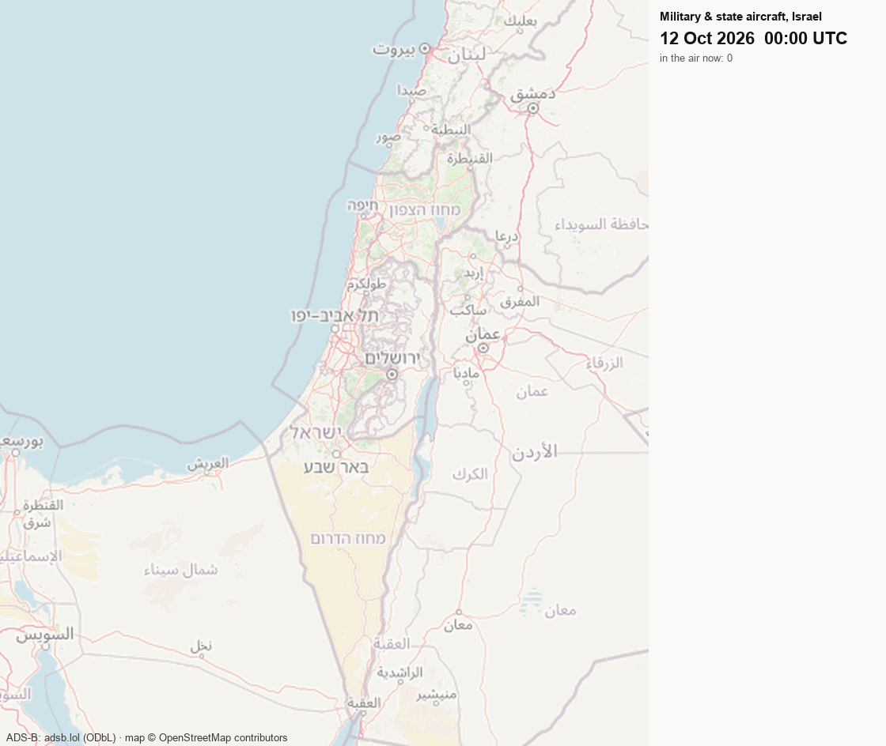
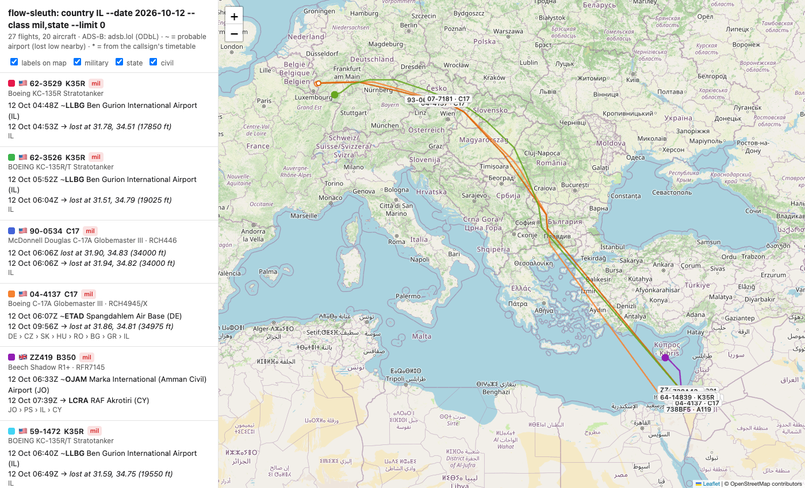
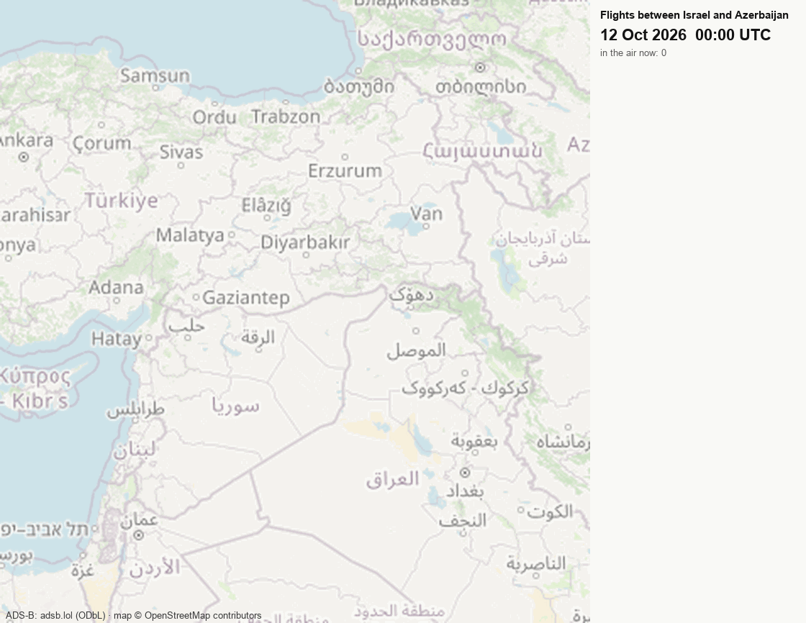
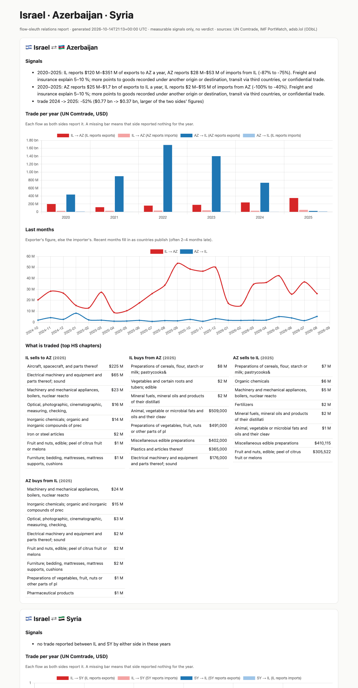
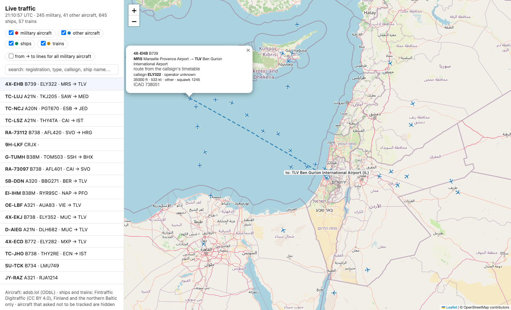

What moves between countries: military, state and civil aircraft, ships, trains and trade. Pick one or more countries and a day to see who flew in, out or over, from where to where, how much the countries trade, and whether their own figures agree. Open data only, no API keys.
Open-source intelligence from public broadcasts and official statistics. It shows aircraft, never passengers. Aircraft whose owners asked not to be tracked are never shown.

12 October 2026, military and state aircraft over Israel: US Air Force KC-135 tankers flying circuits out of Ben Gurion, C-17 transports from US bases in Germany, RAF aircraft, Israeli Air Force Gulfstream and C-130J.
As a Claude Code skill, put the question in your own words. It runs the right commands and answers with a table, a map and the limits that apply.

Every military, state or civil flight in or over the country. Each one comes with its registration, aircraft type and full name, callsign, operator and state of registry, from → to airports, and the countries crossed in order. Click a flight to highlight its route. Open the example.

From A to C, via B, with stops. Legs are joined into trips where the aircraft took off again from where it landed. Here: every direct flight between Israel and Azerbaijan on one day.

Trade as each side reports it, with the gaps and mismatches between the two (embargoes, re-routing, confidential trade). Also the top products, ports and ship traffic, and flights between the countries. Israel · Azerbaijan · Syria.

Military aircraft worldwide, updated every 15 minutes on this site and live when run locally. Click an aircraft for where it took off and where it is going. Ships and trains appear where open live feeds exist. Open it.
git clone https://github.com/mstkyvz/flow-sleuth && cd flow-sleuth uv run skills/flow-sleuth/scripts/day.py 2026-10-12 uv run skills/flow-sleuth/scripts/query.py country IL --date 2026-10-12 --class mil,state --map out/il.html uv run skills/flow-sleuth/scripts/relations.py IL AZ SY --flights 2026-10-12:2026-10-12 --out out/il-az-sy uv run skills/flow-sleuth/scripts/live.py --at 32.5,34.9